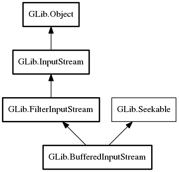

BufferedInputStream
Object Hierarchy:
Description:
Buffered input stream implements FilterInputStream and provides for buffered reads.
By default, BufferedInputStream's buffer size is set at 4 kilobytes.
To create a buffered input stream, use BufferedInputStream, or BufferedInputStream.sized to specify the buffer's size at construction.
To get the size of a buffer within a buffered input stream, use get_buffer_size. To change the size of a buffered input stream's buffer, use set_buffer_size. Note that the buffer's size cannot be reduced below the size of the data within the buffer.
All known sub-classes:

Namespace: GLib
Package: gio-2.0
Content:
Properties:
Creation methods:
Methods:
Inherited Members:
All known members inherited from class GLib.FilterInputStream
All known members inherited from class GLib.InputStream
All known members inherited from class GLib.Object
All known members inherited from interface GLib.Seekable